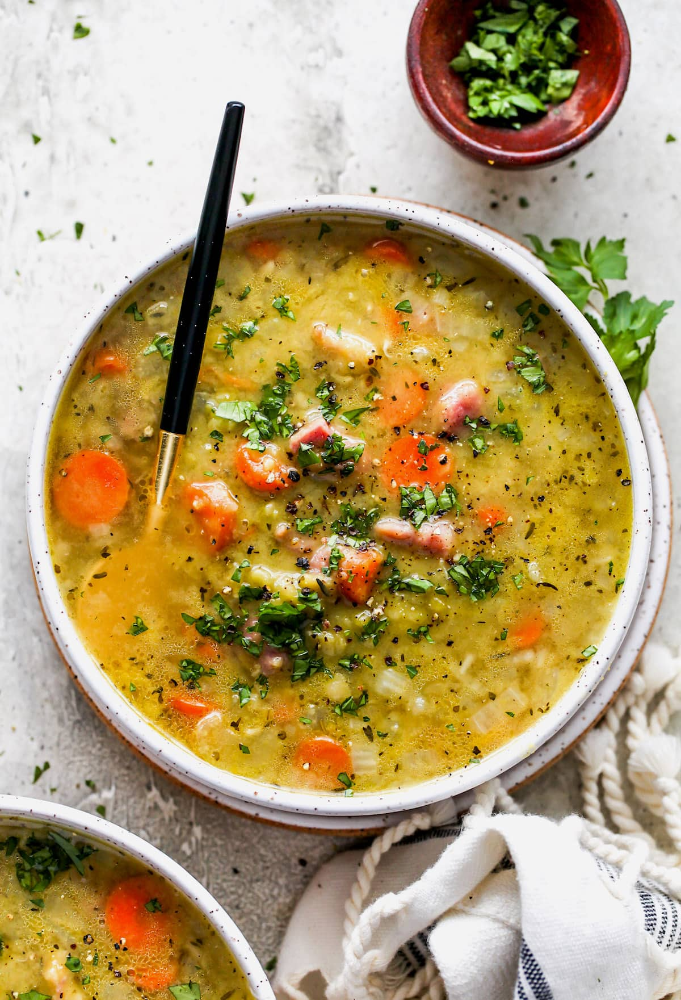

Split Pea Soup

The delicious soup
There's nothing like classic split pea soup to satisfy your comfort food craving.
Ingredients
These are the ingredients you'll need to make this top-rated split pea suop:
- Dried split peas: Find dried split peas on the dried beans and rice aisle
- Cold water: Soak the peas for at least eight hours in cold water. You'll also need two quarts of cold water for the soup itself
- Ham bone: A ham bone is cooked with the peas, adding a wonderfully meaty flavor
- Vegetables:
- 2 onions
- 3 carrots
- 3 celery stalks
- 1 potato
- Spices and seasoning:
- salt
- black pepper
- dried marjoram
How to make Split Pea Soup
You'll find the full, step by step recipe below-but there's a brief overview of what you can expect when you make homemade split pea soup:
- Soak, drain, and rinse the split peas. Place them in a pot
- Add the water, ham bone, onions, and seasoning to the pot
- Bring to a boil, then simmer for about 90 minutes
- Remove the meat from the ham bone and return the meat to the pot
- Add the vegetables and cook until the vegetables are tender